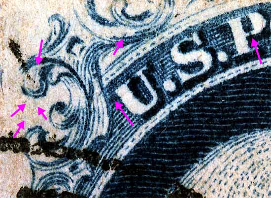

1¢ Franklin Issue of 1851-1857, PLATE 1 EARLY Pos 36L1E, (Scott #7) |
| Scott #7 Blue, Type II, Relief A First Condition Only Issued Imperforate THIS PATIENT IS PART OF A HORIZONTAL STRIP OF 3 |
| Figure 1. Red arrows show faint vertical lines which are shown in Ashbrook/Neinken plating drawings. It should be noted that the plating drawings only show 1 of the 2 lines. This may be due to the quality of the impression or that the lines wore away with the plate wearing down. |
| Figure 2. (Below) The violet arrows below merely indicate marks of interest and may not be constant. Of interest is a faint vertical line in Ornament A.
 |
DISCLAIMER and COPYRIGHT INFORMATION: Thanks for visiting this site. I hope you learn something new as we are making new discoveries all the time. You, the visitor, have my permission to link to my pages and to share the INFORMATION with others. The images themselves fall under the fair use guidelines established by the United States Congress and Copyright law. Basically contact us before using. I also ask in return that you send me an e-mail if I have made a mistake, or have made some other technical blunder that in my rush to put these pages up would cause the visitor confusion. Please also visit my other website at www.slingshotvenus.com. and support the live music arts. While your there, be sure to purchase our music. There are not many philatelic rock stars around and we need all the help we can get. :-) I can be reached at: nerdman@ix.netcom.com UPDATE: 11/29/2012 |